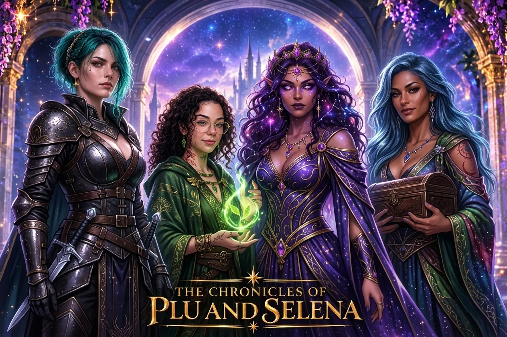
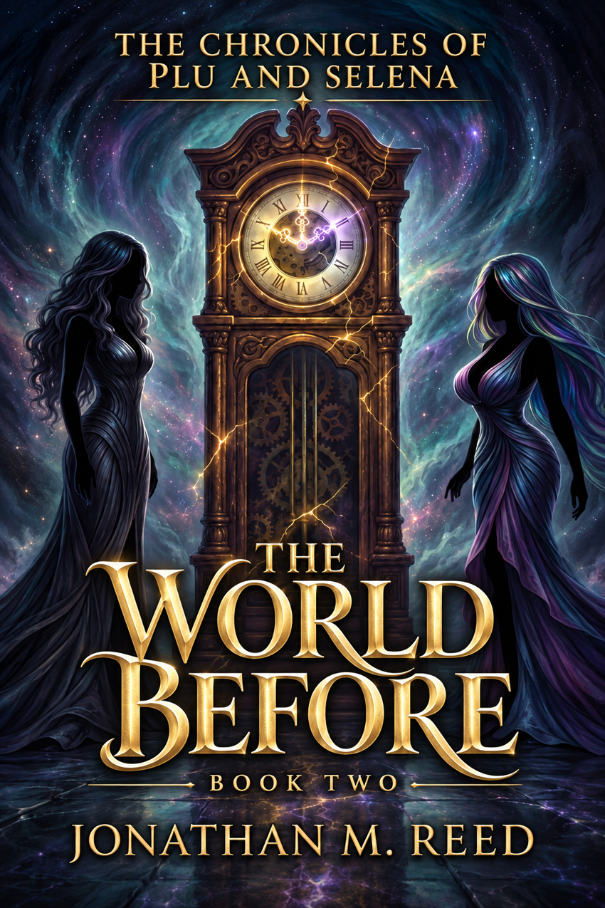
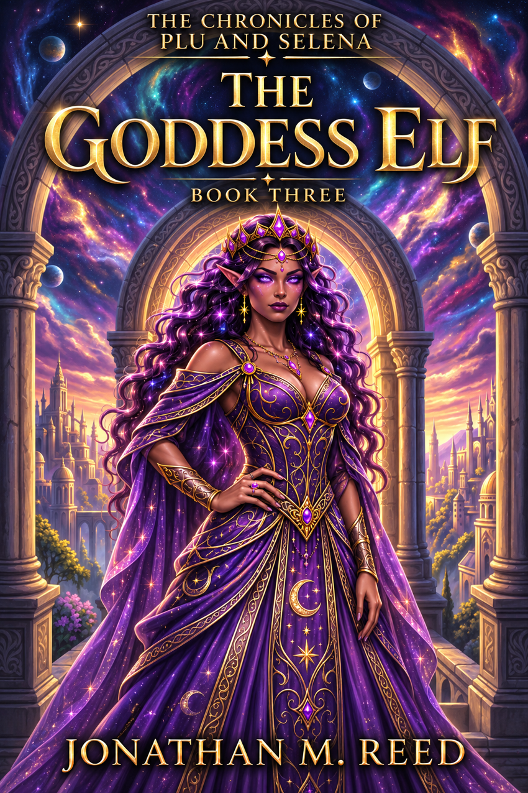
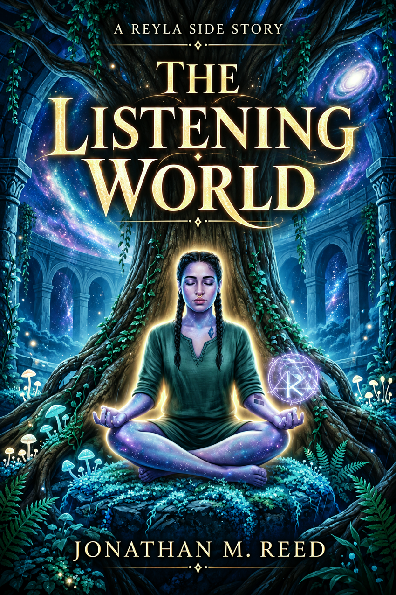
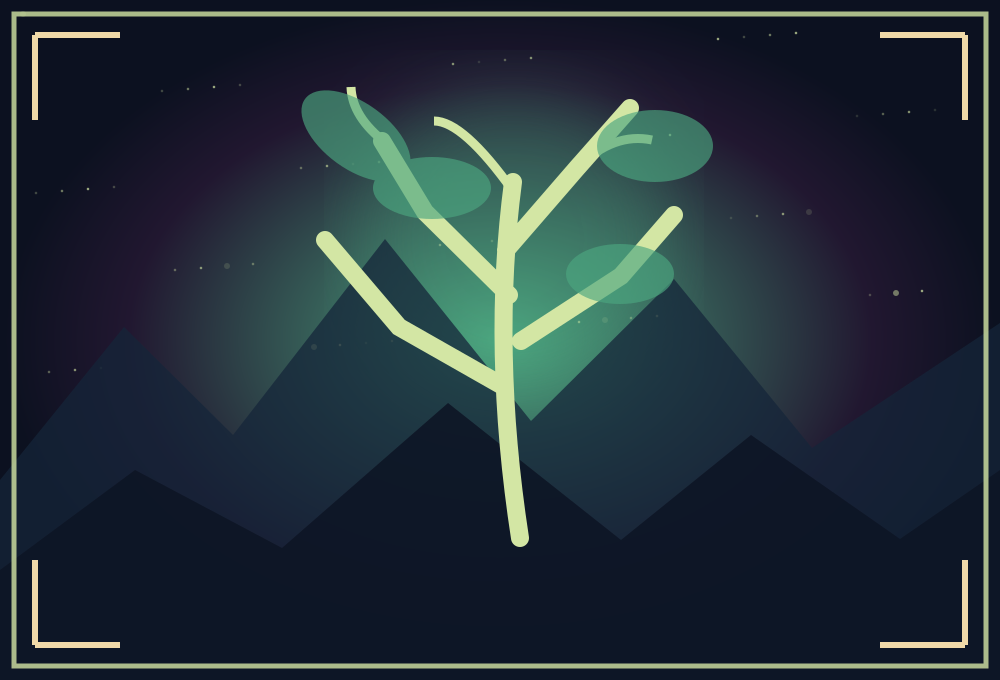
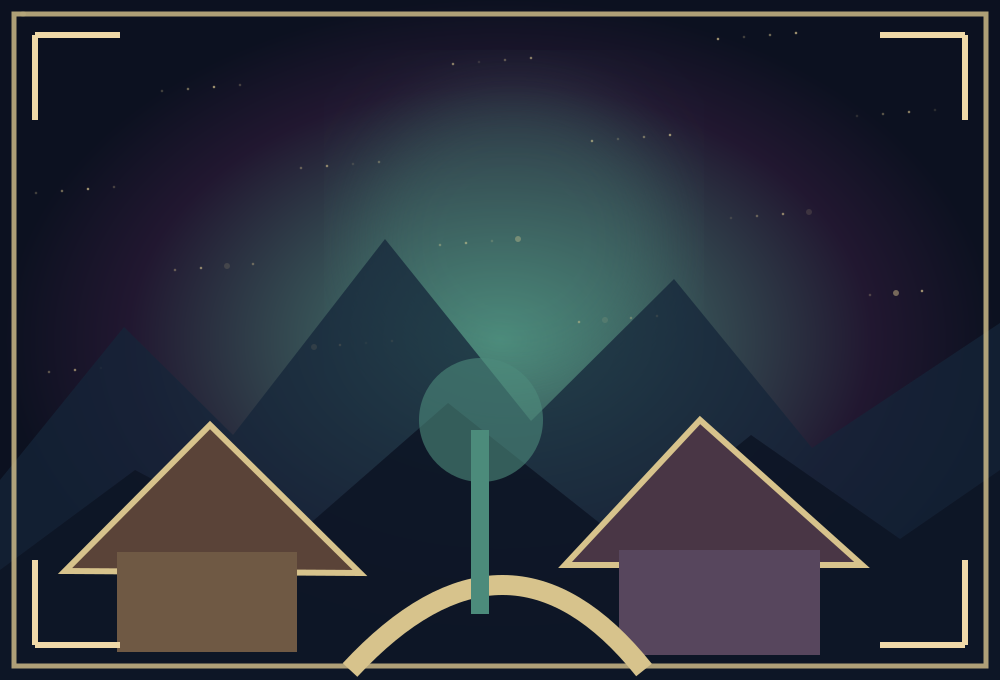

Elf Blood
The mystery begins in a separated world.
Explore Book One
THE OFFICIAL BOOK SERIES · JONATHAN M. REED
One fractured world. Two creators. A thousand lives bound together.
Discover the story ↓WELCOME TO THE CHRONICLES
When an elf with no memory of her past makes a home with a fiercely loyal vampire, their quiet life seems far removed from the powers that shaped the world. But an unexpected arrival, a human agent's investigation and strange pulses of magic begin to disturb a reality that was never meant to be whole.
Across the trilogy, Elf Blood, The World Before and The Goddess Elf trace the mystery from its first fractures to the choices that will determine the world's future. The companion stories follow the people who live on in its aftermath and the quieter moments that hold their family together.

BEGIN HERE · THE ORIGINAL TRILOGY
Read the main story in order. Each book reveals another part of the world and the lives intertwined within it.
The mystery begins in a separated world.
Explore Book One
Discover the ancient choices behind the fracture.
Explore Book Two
Follow the story as the separated destinies converge.
Explore Book ThreeFIND ANYTHING IN THE CHRONICLES
Find a book, person, creature, location, or term without knowing which section holds it. Results respect your current spoiler setting.
Start typing to explore the world.
FIND YOUR WAY INTO THE CHRONICLES
Follow the core trilogy first, then choose the characters and adventures you want to spend more time with.
Elf Blood introduces the separated world and its people.
The World Before explores creation and the origins of the conflict.
The Goddess Elf completes the main trilogy.
 Follow ReylaThe Listening World · A quieter journey of communities and nature
Follow ReylaThe Listening World · A quieter journey of communities and nature Follow BreniDark Rain · A mystery among vampire clans
Follow BreniDark Rain · A mystery among vampire clans Spend time with Selena & TalulaSmall Wonders · Family life before the spark
Spend time with Selena & TalulaSmall Wonders · Family life before the spark Travel with PluPlu's Creatures and a future side story · Whimsical encounters
Travel with PluPlu's Creatures and a future side story · Whimsical encountersSpoiler note: The Listening World and Dark Rain take place after Book Three. Read the main trilogy first if you want to preserve its reveals.
EXPLORE THE UNIVERSE
THE COMPLETE BOOKSHELF
Browse the trilogy, stories that continue afterward and other companion adventures. Post-trilogy books may reveal major plot details.
Store availability and formats vary by country. Only retailer listings identified for the specific book are shown; additional platforms will be added when confirmed.
Start here · Read Books One through Three
Post-main-story companions · Read after Book Three to avoid spoilers

THE PUBLICATION CALENDAR
Dates below reflect retailer listings checked in November 2026 or the author's in-progress status. Publication plans can change; unconfirmed dates are intentionally left open.
LETTERS FROM THE CHRONICLES
Be the first to hear about new editions, release dates, chapter previews and community news.
The subscription form is being prepared. No email address will be collected until secure email delivery and unsubscribe handling are connected.
Planned: optional book news only · unsubscribe anytime.THE READER COMMONS
A home for conversations, theories, character favourites and questions about the worlds of Plu and Selena. Discussions will open once the community platform and moderation are ready.
Introduce yourself, choose your next book, and discuss the series without revealing major twists.
Discussion space in preparationShare lore theories, timelines, questions and discoveries. A dedicated spoiler label will keep surprises protected.
Discussion space in preparationTalk about Plu, Selena, Breni, Reyla, Taylor, Talula and the characters who shape their lives.
Discussion space in preparationBe respectful, mark spoilers, avoid harassment or personal information, and keep discussions focused on the stories. Posting will only be enabled when moderation is configured.
THE PEOPLE OF THE CHRONICLES
Explore profiles for the principal cast and significant people from the companion stories. Major revelations stay hidden until spoilers are enabled.
THE OFFICIAL PORTRAIT GALLERY
Meet the characters through one consistent reference portrait per person. Select a portrait to see it enlarged and learn who the character is.
More artwork and supporting characters will be added as their official designs are completed.
PEOPLES & CREATURES
Explore the living peoples and extraordinary beings encountered throughout the books. These are spoiler-conscious field notes drawn from the stories, not new rules for the world. Each entry has its own approved full-body portrait, with paired male and female references where supplied. Profiles separate details established by the books from visual interpretation; the manuscripts remain the authority.
BEYOND THE GREAT EVENTS
Even in a world shaped by gods and fractured realities, everyday moments matter. These short glimpses introduce the atmosphere of the companion stories without giving away their endings.

THE MANSION · ELF BLOODFar from the noise of the outside world, Taylor and Breni build a life shaped by quiet mornings, the garden and their care for the people they welcome home.
Explore the reading guide →
EVERLANGYRS · THE LISTENING WORLDReyla's journey looks beyond a single peace agreement to the patience required when different communities begin building a future together.
Explore Everlangyrs →SELENA & TALULA · SMALL WONDERSSelena and Talula's companion story turns toward trust, childhood and the ordinary tenderness that grows alongside extraordinary magic.
Explore companion books →PLU & SELENA · PLU'S STORIESPlu and Selena's lighter adventures spend time with conversations, shared meals, unexpected visitors and the creatures they meet along the way.
Explore companion books →A LIVING ARCHIVE
Discover the magic, places and history that shape the universe.
No entries match your search.
THE CHRONICLES ATLAS
Select a glowing location to discover the landscape, its communities, and its place in the stories. The map uses flexible, story-friendly placements rather than fixed canonical coordinates. Select a location below to read established information from the books.

Some adventures take place beyond this world. Enter the portal to learn about Plu’s travels without placing those destinations on the Earth map.
The atlas follows established place names and story information. The concept artwork is not a definitive geographical map. Location markers are arranged for storytelling and can be moved without changing the books.
TERMS FROM THE WORLD
A short guide to the eras and kinds of magic introduced in the books. Important late-story definitions remain behind the Lore Explorer setting.
THROUGH THE AGES
The public timeline shows only broad eras. Reveal spoilers to explore more.
BONDS THAT SHAPE THE WORLD
Explore relationships across the trilogy. Select two illustrated portraits or use the character menus. Major revelations remain hidden until you turn on spoilers.
New Reader mode shows only broad, spoiler-safe relationship information. Enable Lore Explorer for more context.
Choose two characters to discover their relationship.
THE CREATOR'S DESK
The official world hub for the trilogy, companion adventures, characters and evolving lore of The Chronicles of Plu and Selena.
Written by Jonathan M. Reed.
Explore the library